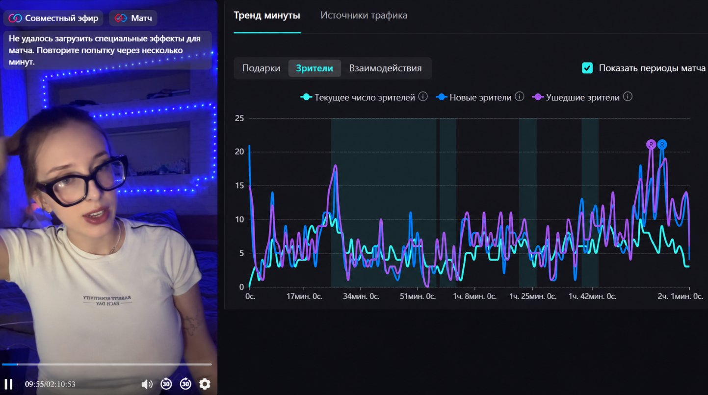
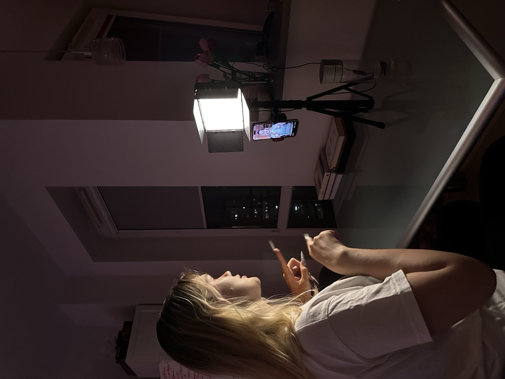

Виходь у TikTok Live. Зростай не сама.
ALive допомагає підготувати профіль, освоїти механіку ефірів і розвиватися разом з особистим ментором та командою. Можна почати з нуля — головне, бути готовою діяти регулярно.
ПРО НАС
Команда поруч, поки ти знаходиш свою подачу.
ALive поєднує практику, зворотний зв’язок і живе оточення. Тут не потрібно спочатку ставати ідеальною — основу збирають разом із тобою, а кожен наступний ефір стає матеріалом для розвитку.
без ідеального старту ✨

наживо просто заразБачимо кожну деталь ефіру
-
Об’єктивність замість «здається»
Ментор бачить глибоку статистику твоїх ефірів і щотижня аналізує дані разом із тобою.
-
Аналіз аудиторії
Розбираємо, на яких моментах ти утримуєш глядачів, а на яких — втрачаєш.
-
Конструктивний фідбек
Рекомендації на основі реальних цифр — і постійне покращення результату ефір за ефіром.
Реальна статистика одного з ефірів усередині команди ALive.
КЕЙСИ
Приклади шляху всередині ALive
Реальні результати дівчат усередині команди ALive.
Більше, ніж робота ♡
Рутенія
Ще у квітні ми знайшли один одного на сайті пошуку роботи. 👀 Вона шукала вакансію баристи, а ми — дівчат, у яких горять очі пробувати щось нове.
Вже у травні її результат — $5000+ 💸 Це про ефіри, стабільність і підтримку команди поруч. 🤍
Ліза
Ліза почала стримити близько місяця тому. 📈 Перший гарний результат прийшов буквально за перший тиждень.
Завжди слухає свого ментора й виконує всі рекомендації — і це видно за результатом: $1500 заробітку вже в перший місяць.
Віка
Віка з Ірландії — одразу яскраво включилась у процес: дуже позитивна і по-справжньому любить стримити. 🌟
Ефіри змінили її життя: за перший місяць заробила $2000, а зараз активно веде ефіри й постійно покращує їх якість разом із нами.
ЯК ПОЧАТИ
Тобі до нас, якщо ти готова бути в процесі
Не шукаємо ідеальний старт. Важливіша готовність пробувати, слухати зворотний зв’язок і повертатися в ефір.
- 01Ти зараз не співпрацюєш з іншим агентством прямих трансляцій.
- 02Ти готова регулярно виходити в ефір і бути на зв’язку з ментором.
- 03Ти відкрита до зворотного зв’язку, навчання та спілкування з аудиторією.

Від першого повідомлення — до першого впевненого ефіру
П’ять кроків, які проходить кожна дівчина в команді.
-
01
Ти пишеш нам
Відкриваєш Telegram, пишеш @hr_alive і коротко розповідаєш про себе. Якщо TikTok-профіль уже є — можеш одразу надіслати посилання.
-
02
Знайомимося
Обговорюємо твій досвід, очікування, доступний графік і відповідаємо на запитання про формат команди.
-
03
Збираємо основу
Налаштовуємо профіль, напрямок, подачу та базовий сценарій ефіру.
-
04
Виходимо в live
Переходимо до практики та розбираємо перші складні моменти разом із ментором.
-
05
Аналізуємо та посилюємо
Працюємо над утриманням уваги, упевненістю, взаємодією з аудиторією та стабільністю ефірів.
Не впевнена, чи підходить тобі формат? Напиши @hr_alive — обговоримо особисто.
Поставити запитанняНЕ САМА В ЕФІРІ
Підтримка продовжується після кнопки «завершити live»
Після ефіру залишаються запитання, сумніви та ідеї. В ALive їх не потрібно розбирати наодинці: поруч ментор і учасниці, які знають цей формат зсередини.
ти більше не сама тут 💫
Можна запитати
Простір для запитань і складних ситуацій.
Можна розібрати
Зворотний зв’язок після ефіру.
Можна побачити інакше
Обмін підходами та досвідом усередині команди.
FAQ
Запитання перед першим повідомленням
Якщо твого запитання тут немає, напиши напряму в Telegram.
Чи потрібен уже розкручений TikTok-акаунт?
Ні. Почати можна з нового або невеликого акаунта. Команда допомагає вибудувати основу профілю та підготуватися до перших ефірів.
Чи потрібен досвід стримінгу?
Ні. Важливіша готовність навчатися, пробувати й регулярно застосовувати зворотний зв’язок на практиці.
Що знадобиться для старту?
Смартфон зі справною камерою, стабільний інтернет і місце, де можна спокійно проводити ефіри. Решту рекомендацій обговорюємо під час підготовки.
Який ритм потрібен для участі?
Поточний формат передбачає регулярну роботу: орієнтир — близько трьох з половиною годин ефірів на день, шість днів на тиждень, а також зв’язок із ментором. Деталі графіка обговорюються особисто.
Чи можна поєднувати з навчанням або основною роботою?
Так, якщо твій графік дозволяє зберігати регулярність і дотримуватися погодженого ритму. Краще заздалегідь обговорити свою ситуацію в Telegram.
Кому підходить ALive?
Дівчатам, які хочуть розвиватися в TikTok Live, готові працювати регулярно та зараз не співпрацюють з іншим агентством прямих трансляцій.
Як почати?
Напиши @hr_alive у Telegram, коротко розкажи про себе та додай посилання на TikTok, якщо профіль уже існує.
ТВІЙ НАСТУПНИЙ КРОК
Готова вийти в ефір не сама?
Напиши @hr_alive у Telegram. Розкажи кілька слів про себе та надішли посилання на TikTok, якщо акаунт уже є. Почнемо зі звичайної розмови.
Дякуємо! Заявку надіслано.
Ми зв’яжемось з тобою в Telegram найближчим часом.